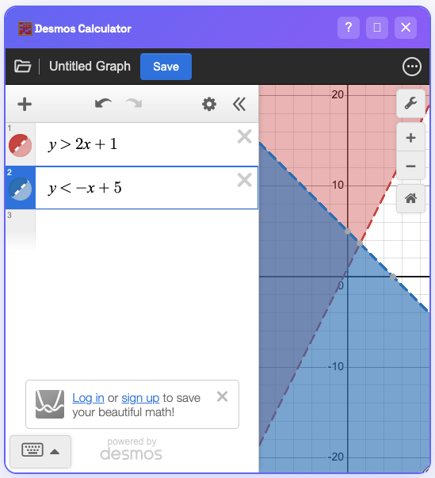

Desmos Tricks
Inequality Shading
Visually solve complex systems of inequalities in seconds.
🗺️ Visualizing Solutions
Best for: Identifying solution regions instantly.
📝 SAT Problem
The solution to the system y > 2x + 1 and y < -x + 5 contains points in every quadrant EXCEPT:
(A) Quadrant I
(B) Quadrant II
(C) Quadrant III
(D) Quadrant IV
Step 1: Graph the Inequalities
Type both equations into Desmos. Look for the overlapping shaded region (usually purple or darker color).
Step 2: Check Quadrants
The shaded region exists in Top-Right (I), Top-Left (II), and Bottom-Left (III).
It never crosses into the Bottom-Right (IV).
✅ Final Answer:
Quadrant IV (Choice D)